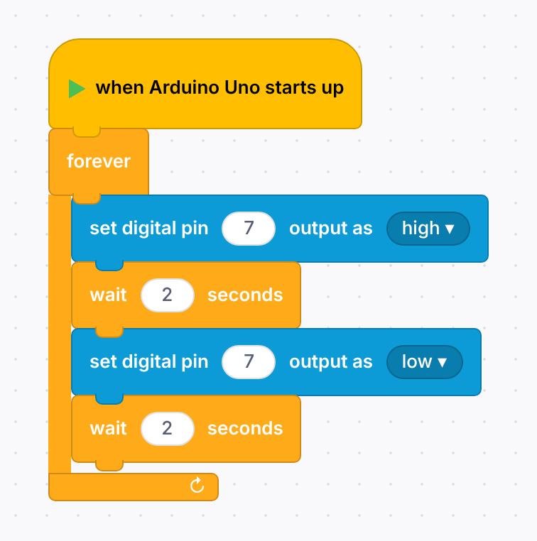

🎬فيديو الشرح
📖الشرح حسب العمر
🧒
الموديول قطعة نوصلها بالأسلاك، والشيلد قبعة نلبسها للأردوينو مباشرة.
Modules: وحدات إلكترونية صغيرة تُوصل بالأردوينو عبر الأسلاك أو بروتوكولات I2C وSPI وUART لإضافة وظائف جديدة. Shields: لوحات تُركّب مباشرة فوق الأردوينو لتوسيع إمكانياته دون توصيلات كثيرة.
Modules: وحدات إلكترونية صغيرة تُوصل بالأردوينو عبر الأسلاك أو بروتوكولات I2C وSPI وUART لإضافة وظائف جديدة. Shields: لوحات تُركّب مباشرة فوق الأردوينو لتوسيع إمكانياته دون توصيلات كثيرة.
- الشيلد يستعمل نفس ترتيب منافذ UNO
- انتبه لتعارض المنافذ عند تركيب أكثر من شيلد
- IOREF يخبر الشيلد هل اللوحة 5V أم 3.3V
🖼️الصورة التوضيحية
- 1الشيلدفوق اللوحة
- 2المنافذتمرّ للأعلى
- 3UNOتحت الشيلد
💻البرمجة: Arduino IDE و mBlock 5
void setup() { pinMode(7, OUTPUT); } void loop() { digitalWrite(7, HIGH); delay(2000); // تشغيل الجهاز digitalWrite(7, LOW); delay(2000); // إيقاف }

في mBlock 5: الأجهزة ← أضف ← Arduino Uno، اختر وضع رفع (Upload)، ثم اتصال واختر منفذ COM، ركّب الكتل كما في الصورة واضغط رفع.
✅سؤال سريع
كيف يُركّب الشيلد؟